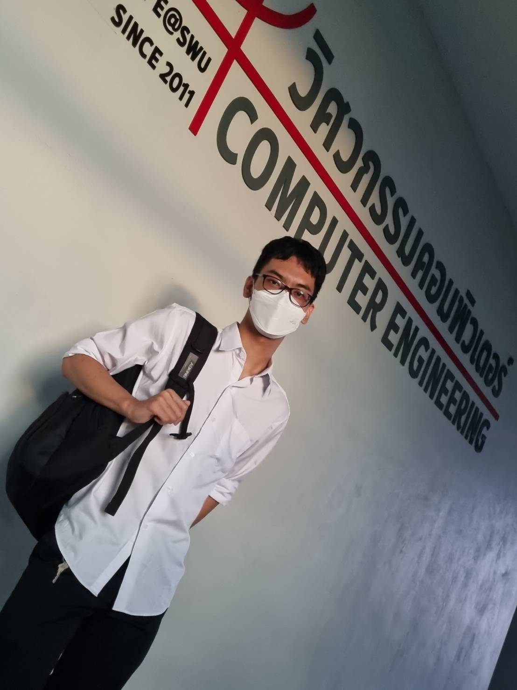

Srinakharinwirot University (SWU)

- Age : 19
- Nationality : Thai
- Education : Undergraduate at Srinakharinwirot U.
- Talent : Working as team, socializing and conversing with people, swimming, drawing etc.